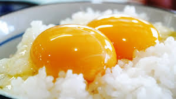

Hello TKG
Active
Link
Dropdown
Action
Another action
Something else here
Dropdown header
Separated link
One more separated link
Link
Dropdown
Action
Another action
Something else here
Separated link

卵かけご飯とは...
卵かけご飯とは飯に非加熱の鶏卵をかけた飯料理です。
調味料としては、醤油を用いるのが王道です。
レシピ
１． まず、パッパとライスでも昨日のご飯の残りでもいいので、ご飯をお茶碗一杯よそいます。
２． 次に、新鮮な鶏卵を割りほぐしたものを１に注ぎ入れます。
３． 最後に、お好みに少量の醤油を加えます。（私はめんつゆもオススメです！）